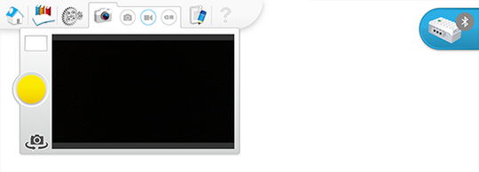

录制 Milo（麦乐）任务的视频
让学生为自己完成的任务录制一段视频。这可以锻炼他们自己操作拍摄工具和录制视频的能力，对以后的实验很有帮助。

让学生将视频插入到记录中。

让学生展示自己的作品
继续进行下一部分基础实验之前，让学生表达一下自己的想法：
-
就科学和工程仪器展开简短讨论。
-
让他们描述科学漫游器对人类有哪些帮助。
让学生为自己完成的任务录制一段视频。这可以锻炼他们自己操作拍摄工具和录制视频的能力，对以后的实验很有帮助。

让学生将视频插入到记录中。
继续进行下一部分基础实验之前，让学生表达一下自己的想法：
就科学和工程仪器展开简短讨论。
让他们描述科学漫游器对人类有哪些帮助。